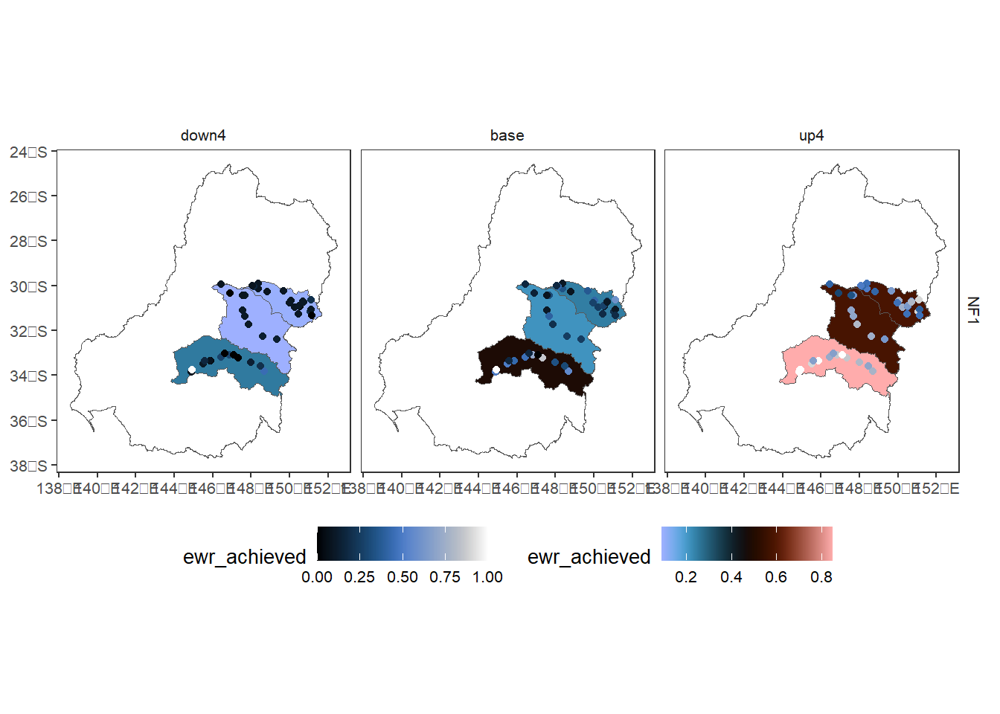

Run full toolkit (saving)
This document provides a template for running through the toolkit, saving the output of each step along the way in a single document (e.g. not running the Controller, Aggregator, and Comparer as separate notebooks). Retaining everything in-memory is a very simple flip of a switch, demoed in its own doc.
library(werptoolkitr)
library(sf)Structure
To run the toolkit, we need to provide paths to directories for input data and output data, as well as arguments for the aggregation.
One option is to do that in a parameters file, and then treat this as a parameterised notebook.
The other option is to have this be the parameterising file, so we can have a bit more text around the parameterisations. These are not mutually exclusive options, just different interfaces to the code. The answer for any particular analysis likely depends on whether we’re working interactively or want to fire off a large number of parallel runs.
Parameters
Directories
Input and output directories
Use the scenario_example/ directory created to capture a very simple demonstration case of 46 gauges in three catchments for 10 years.
Normally project_dir should point somewhere external (though keeping it inside or alongside the hydrograph data is a good idea.). But here, I’m generating test data, so I’m keeping it in the repo.The flow scaling example takes the more typical approach of pointing to data external to the repo.
# Outer directory for scenario
project_dir = file.path('scenario_example')
# Preexisting data
# Hydrographs (expected to exist already)
hydro_dir = file.path(project_dir, 'hydrographs')
# Generated data
# EWR outputs (will be created here in controller, read from here in aggregator)
ewr_results <- file.path(project_dir, 'module_output', 'EWR')
# outputs of aggregator. There may be multiple modules
agg_results <- file.path(project_dir, 'aggregator_output')Controller
We use the default IQQM model format and climate categorisations, though those could be passed here as well (see controller).
Control output and return
To determine what to save and what to return to the active session, use outputType and returnType, respectively. Each of them can take a list of any of 'none', 'summary', 'annual', 'all'. For this demonstration I’ll just use summary and not return anything to memory.
outputType <- list('summary')
returnType <- list('none') # list('summary', 'all')Aggregator
To keep this simple, we use one aggregation list and the read_and_agg wrapper to only have to pass paths. See the more detailed documents for the different ways to specify those aggregation lists.
What to aggregate
The aggregator needs to know which set of EWR outputs to use (to navigate the directory or list structure). It should accept multiple types, but that’s not well tested, so for now just use one.
aggType <- 'summary'We need to tell it the variable to aggregate, and any grouping variables other than the themes and spatial groups. Typically, scenario will be a grouper, but there may be others.
agg_groups <- 'scenario'
agg_var <- 'ewr_achieved'Do we want it to return to the active session? For this demo, nothing should return here- we’re saving outputs, not returning them to the session.
aggReturn <- FALSEHow to aggregate
Fundamentally, the aggregator needs paths and two lists
sequence of aggregations
sequence of aggregation functions (can be multiple per step)
Here, I’m using an interleaved list of theme and spatial aggregations (see the detailed docs for more explanation), and applying only a single aggregation function at each step for simplicity. Those steps are specified a range of different ways to give a small taste of the flexibility here, but see the spatial and theme docs for more examples.
aggseq <- list(ewr_code = c('ewr_code_timing', 'ewr_code'),
env_obj = c('ewr_code', "env_obj"),
sdl_units = sdl_units,
Specific_goal = c('env_obj', "Specific_goal"),
catchment = cewo_valleys,
Objective = c('Specific_goal', 'Objective'),
mdb = basin,
target_5_year_2024 = c('Objective', 'target_5_year_2024'))
funseq <- list(c('CompensatingFactor'),
c('ArithmeticMean'),
c('ArithmeticMean'),
c('ArithmeticMean'),
list(wm = ~weighted.mean(., w = area,
na.rm = TRUE)),
c('ArithmeticMean'),
list(wm = ~weighted.mean(., w = area,
na.rm = TRUE)),
c('ArithmeticMean'))Run the toolkit
Controller
if (REBUILD_DATA) {
ewr_out <- prep_run_save_ewrs_R(scenario_dir = hydro_dir,
output_dir = project_dir,
outputType = outputType,
returnType = returnType)
}Aggregator
if (REBUILD_DATA) {
aggout <- read_and_agg(datpath = ewr_results,
type = aggType,
geopath = bom_basin_gauges,
causalpath = causal_ewr,
groupers = agg_groups,
aggCols = agg_var,
aggsequence = aggseq,
funsequence = funseq,
saveintermediate = TRUE,
namehistory = FALSE,
keepAllPolys = TRUE,
returnList = aggReturn,
savepath = agg_results)
}It would be straightforward here to run the comparer as well, but as discussed above, there is not much reason until we settle on a couple canonical outputs.
Quick check
To check here that we did in fact run the toolkit, we read in the data and make a quick plot.
agged_data <- readRDS(file.path(agg_results, 'summary_aggregated.rds'))
# Scenario data
scenarios <- tibble::tibble(scenario = c('base', 'down4', 'up4'), delta = c(1, 0.25, 4))
sceneorder <- forcats::fct_reorder(scenarios$scenario, scenarios$delta)
scene_pal <- make_pal(unique(scenarios$scenario),
palette = 'ggsci::nrc_npg',
refvals = 'base', refcols = 'black')
# Quick plot
agged_data$sdl_units |>
dplyr::filter(env_obj == 'NF1') |> # Need to reduce dimensionality
plot_outcomes(y_col = 'ewr_achieved',
x_col = 'map',
colorgroups = NULL,
colorset = 'ewr_achieved',
pal_list = list('scico::berlin'),
facet_col = 'scenario',
facet_row = 'env_obj',
scene_pal = scene_pal,
sceneorder = sceneorder,
underlay_list = 'basin',
overlay_list = list(overlay = dplyr::filter(agged_data$env_obj, env_obj == 'NF1'),
overlay_pal = 'scico::oslo',
overlay_ycol = 'ewr_achieved',
clip = TRUE)) +
ggplot2::theme(legend.position = 'bottom')